Resources tabs
For some device families, the Device Configurator contains several tabs, each of which provides access to specific resources. Different devices have different resources tabs. However, for some device families, there are no separate tabs; resources are shown in a single pane, sometimes under collapsible trees.
When you enable a resource, or select an enabled resource, the Parameters pane displays various configuration options. As described under Icons, some enabled resources may contain errors, warnings, tasks, or infos that indicate some action might be required to resolve the issue. See Notice List for more details.
- Solutions tab – Options to configure multiple hardware blocks.
- Peripherals – Options to enable any of the analog, digital, system, and communication hardware capabilities of the chip that are not related to the platform.
- Pins – Options for all the pin related resources.
- Analog-Routing tab – This tab shows all the analog resources, whether enabled or not, and how they connect. It also allows you to edit routes.
- System tab – Options for chip-wide configuration settings such as system clocks, power management, and debug interfaces.
- Memory tab – Options to allocate memory to various cores.
- MMIO-Clocks tab– Options for all the MMIO clocks.
- Peripheral-Clocks tab – Options for all the peripheral clocks.
- DMA tab – Provides configuration of the DMA channel and transaction descriptors.
Tab Features
Sections with diagrams, such as Pins, Analog-Routing, and System, include Zoom and Fit to size commands to resize the diagram as needed. You can also press and hold the [Ctrl] key and use the mouse scroll wheel to zoom in and out.
If you zoom the image larger than the frame area, scroll bars appear to move to different area of the diagram. You can also press and hold the [Alt] key with the mouse button to use the pan tool.
Each of the tabs (except the Analog-Routing tab) also has the following features:
- Filter – The Resource column shows all available resources in an expandable tree. The filter box above the list of peripherals allows you to limit the peripherals shown in the tree as well as a Hide disabled resources filter button. There are also Expand and Collapse commands.
- Cut, Copy,
Paste – Use these commands to move and copy settings from
one resource of the same type to another.
- When you use Cut, the settings will be copied to the clipboard, and the selected resource will be disabled.
- When you use Copy, the settings will just be copied to the clipboard.
- When you use Paste, the selected resource will be enabled if needed. The selected resource must support the same Personality name and version as the cut/copied resource.
- Name(s) – This displays the current resource name(s). This is
an editable field where you can specify optional, alternate names for this resource.
This is also used in generated code. Note: Enter any string in this field. The tool converts the name into a legal C identifier and replaces non-legal characters with underscores. If entering more than one name, use a coma-separated list.
- Personality – Each resource has a "Personality" file that
contains the information for the given resource.
- Some peripherals, such as Serial Communication Block (SCB) and Timer, Counter, Pulse Width Modulator (TCPWM), have a pull-down menu to select a specific personality, such as UART, SPI, or I2C.
- Some peripherals have multiple personality versions from which you can select.
- Some peripherals have a read-only field that only shows the name of this resource’s personality file.
Solutions tab
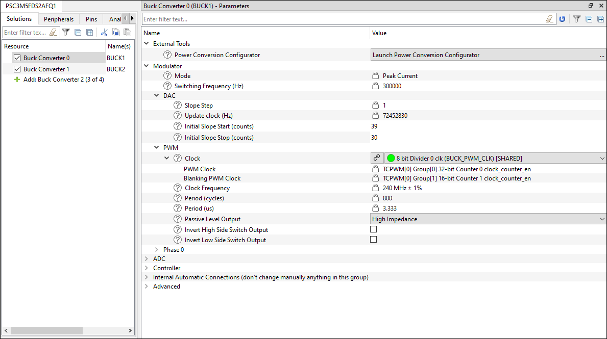
Peripherals
The Peripherals tab/tree is where you enable various analog, digital, system, and communication peripherals for the device to include in your application. The filter box and the hide disabled button above the list of peripherals allows you to limit the resources shown in the tree. This tab allows you to enter one or more 1. for the resource. It also shows the selected 1., where applicable.
Device families with tabs
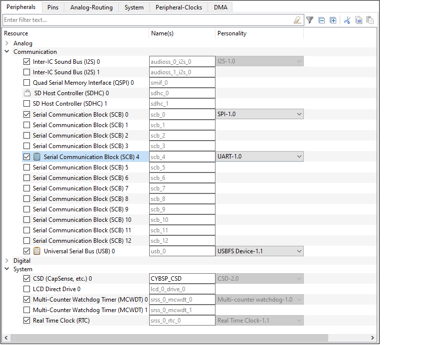
Device families without tabs
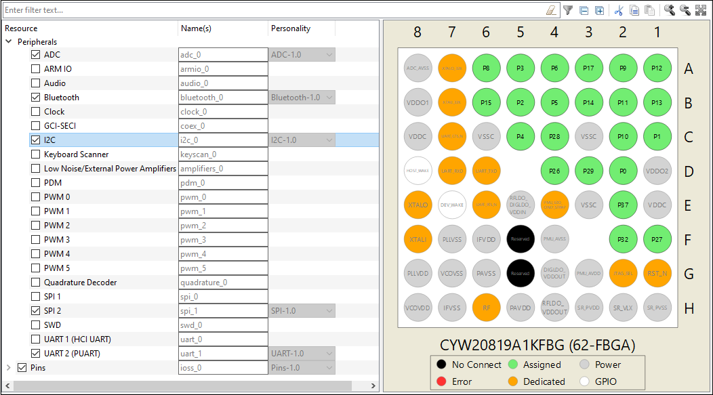
Pins
The Pins tab/tree is where you enable all the pin related resources. All available pins are shown in an expandable tree, arranged by port number. The filter box and the hide disabled button above the list of pins allows you to limit the pins shown in the tree. This tab allows you to enter one or more 1. for the resource. It also shows the selected 1., where applicable.
The interactive pin package diagram shows the different states of the pins; there is a legend on the diagram. You can enable/disable a pin by double-clicking it in the diagram.
Pin states are shown in different colors:
- Black – No connect
- White – Disabled
- Green – Enabled
- Grey – Power/ground pins
- Orange – Fixed function pins
- Red – Error state
- Semi-transparent – The hardware resource’s enabled state has been locked.
Device families with tabs
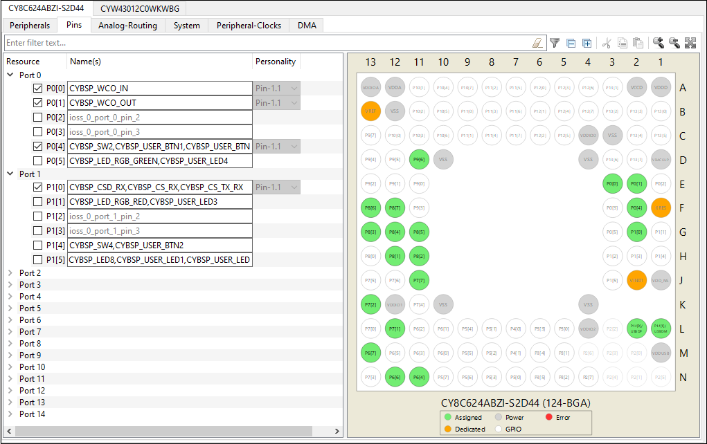
Device families without tabs
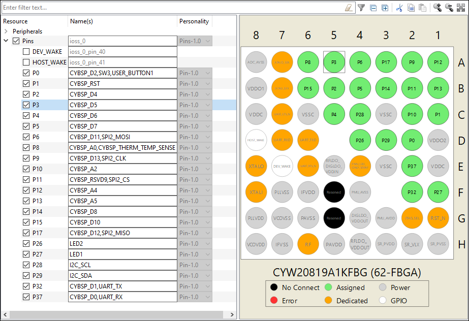
Analog-Routing tab
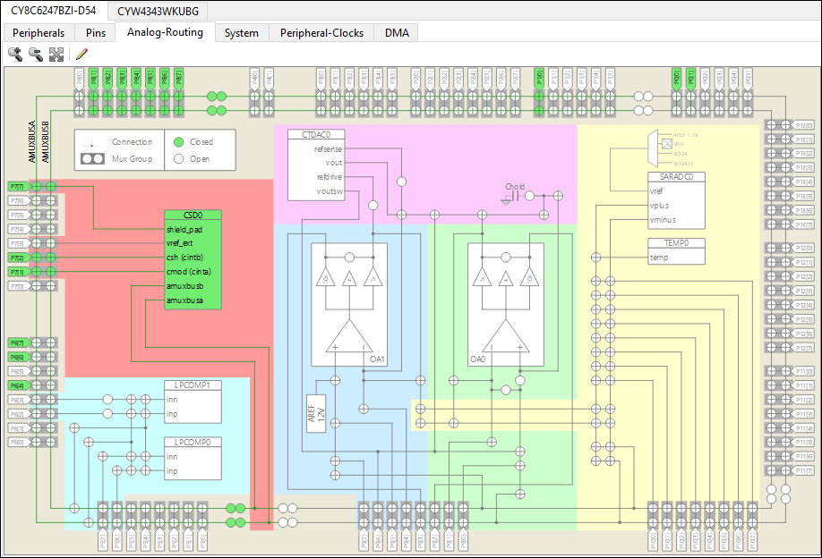
The Edit command opens the Analog Route Editor.
Analog Route Editor
The Analog Route Editor allows you to manually edit the routing of analog resources in your application. It also provides the ability to lock-down all or some of the results.
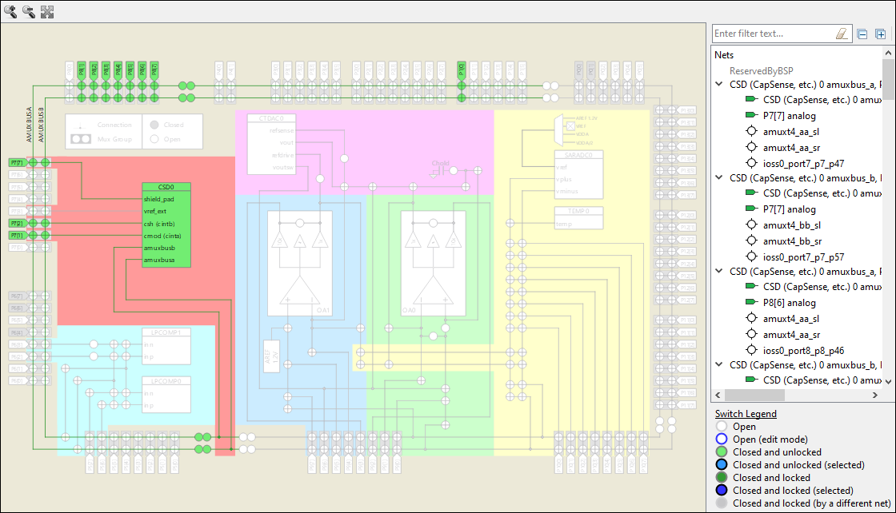
Select a resource
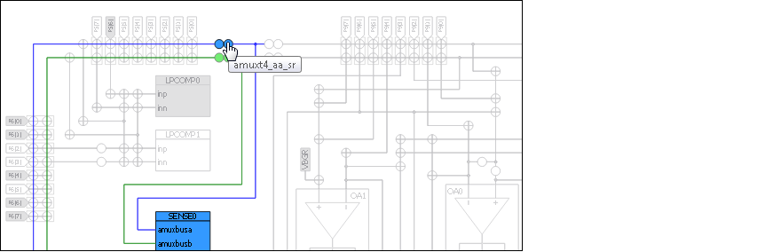
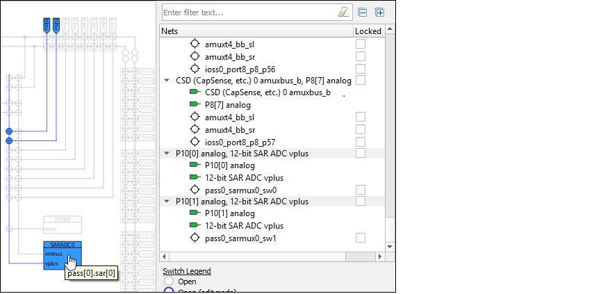
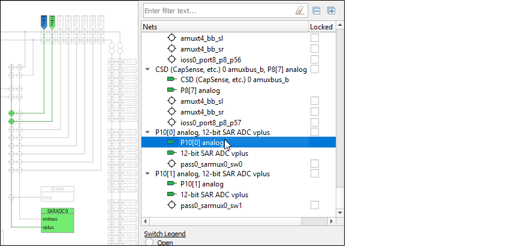
Edit Route
With an editable analog resource selected, click the Edit Route command to enable edit mode. If multiple routes are selected, a pull-down menu displays to select the route to edit. You cannot edit multiple routes at the same time.
In edit mode, the net tree shows only the applicable route entries, and you cannot select resources using the tree. However, the lock/unlock check boxes remain enabled for use. The inactive switches change color to indicate they can be selected to use for the route being edited.
Route changes are live with updates applied automatically as you make changes. Selecting a switch adds it to the current route in a locked state and the route tree is updated to reflect the modifications.
If a change results in an error, a message displays. The routes are automatically rolled back to the previous state, so you will lose at most the last invalid change.
The toolbar shows the Finish edit command to return the editor to selection mode.
System tab
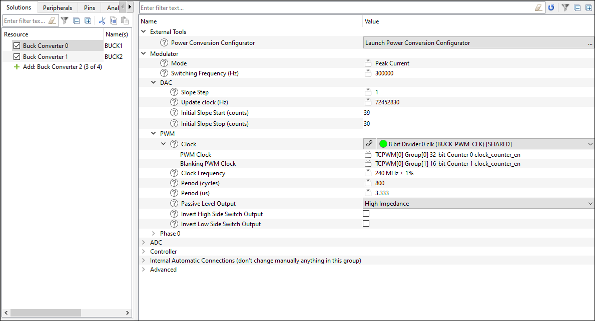
The interactive clock diagram shows all the system clocks and how they connect to each other. You can enable/disable a clock by double-clicking it in the diagram. Enabled clocks are green, disabled clocks are white, and clocks in error state are red.
Memory tab
The Memory tab becomes visible for supported devices to configure and visualize memory regions for each core in the device. Similar to other tabs, there is a Resource section to enable/disable the Memory, as well as the Protection section for the Memory Protection Controllers (MPC), Memory Protection Units (MPU), and Security Attribution Units (SAU). This tab allows you to enter one or more 1. for the resource. It also shows the selected 1., where applicable.
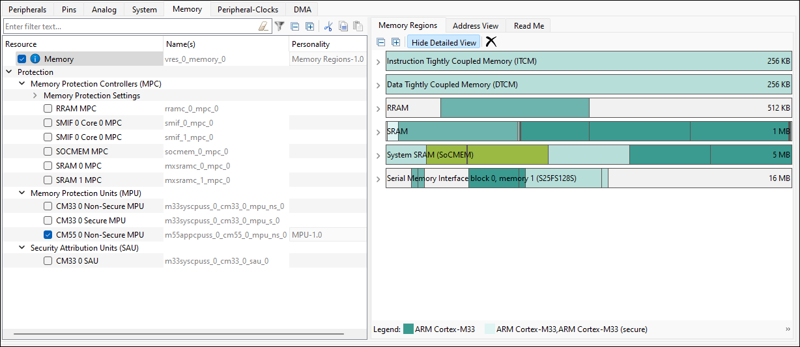
Memory Regions subtab
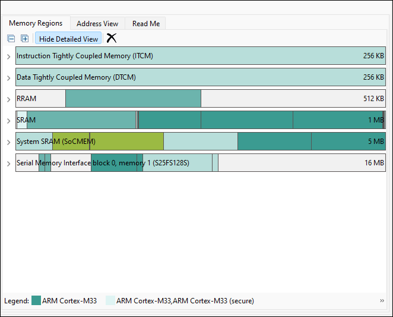
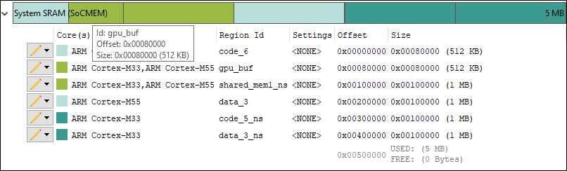
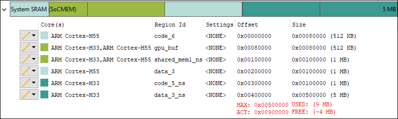
Show/hide detailed view
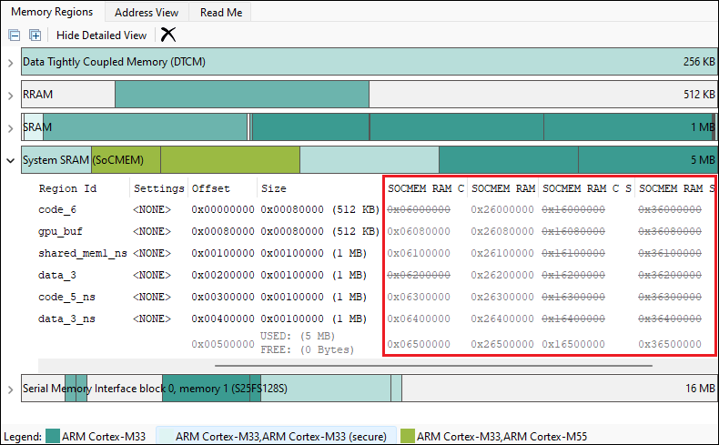
Add/edit memory allocations
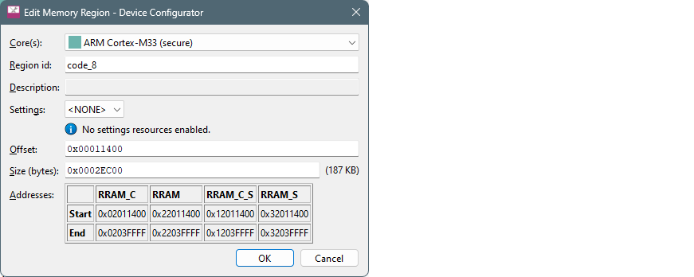
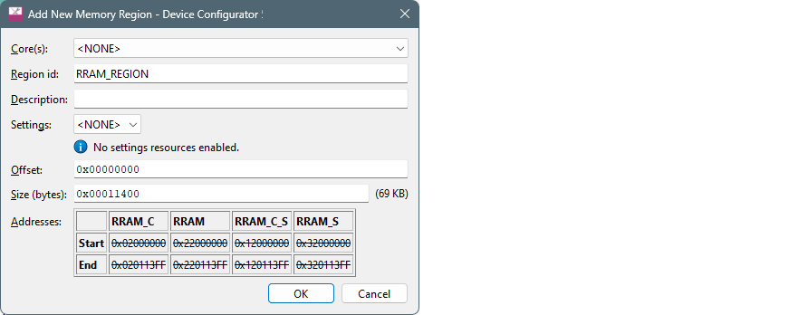
Once the dialog is open, enter values:
- Select one or more Core(s) from the pull-down menu by clicking the corresponding check boxes.
- As needed, type the name of the Region id.
- If present, select Settings.Note: The Settings option is only available if there is a corresponding MPC available on the hardware for the memory. If no memory protection settings resource has been enabled, an info message will be added stating this to make you aware of what needs to be done to populate the drop-down.
- Enter the Offset and Size.
The Size entry allows for hex or decimal entry. It also accepts specifying units, which will always be converted to bytes. Units are case insensitive and can be entered as follows:
- bytes or b = byte
- kb or k = kilobyte (1 KB = 1,024 Bytes)
- mb or m = megabyte (1 MB = 1024KB = 1,048,576 Bytes)
- gb or g = gigabyte (1 GB = 1024MB = 1,048,576 KB = 1,073,741,824 Bytes)
- tb or t = terabyte (1 TB = 1024 GB = 1,048,576 MB = 8,388,608 KB = 1,099,511,627,776 Bytes)
- pb or p = petabyte (1 PB = 1024 TB = 1,048,576 GB = 1,073,741,824 MB = 1,099,511,627,776 KB = 1,125,899,906,842,624 Bytes)
- eb or e = exabyte (1 EB = 1024 PB = 1,048,576 TB = 1,073,741,824 GB = 1,099,511,627,776 MB = 1,125,899,906,842,624 KB = 1,152,921,504,606,846,976 Bytes)
- zb or z = zettabyte (1 ZB = 1024 EB = 1,048,576 PB = 1,073,741,824 TB = 1,099,511,627,776 GB = 1,125,899,906,842,624 MB = 1,152,921,504,606,846,976 KB = 1,180,591,620,717,411,303,424 Bytes)
- yb or y = yottabyte (1 YB = 1024 ZB = 1,048,576 EB = 1,073,741,824 PB = 1,099,511,627,776 TB = 1,125,899,906,842,624 GB = 1,152,921,504,606,846,976 MB = 1,180,591,620,717,411,303,424 KB = 1,208,925,819,614,629,174,706,176 Bytes)
If there are obvious errors, the dialog will not allow you to click OK. There may also be an error message.
If you prefer, use the keyboard shortcuts defined on the menus.
Rearrange memory regions
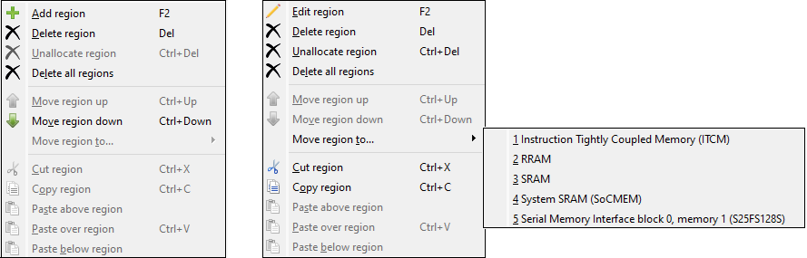
Use the Legend
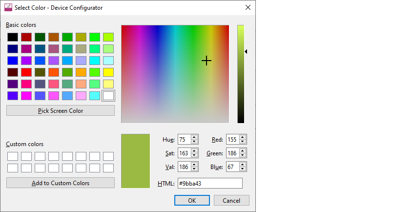
How to find out which region the main goes in from the main ld
Code that doesn't have an explicit section name goes in .text (or .text.function_name when using -ffunction-sections). Search for .text in the linker script or search the .map file for the function name.
How to read the build output and associate it with the regions defined in the tool
For each project in an application, “make build” will display a summary of the output sections:
----------------------------------------------------
| Section Name | Address | Size |
----------------------------------------------------
| .appText_1 | 0x60580400 | 8048 |
| .ARM.exidx | 0x60582370 | 8 |
| .copy.table | 0x60582378 | 48 |
| .data | 0x20000000 | 36 |
| .appText_2 | 0x00000000 | 680 |
| .zero.table | 0x605823a8 | 8 |
| .ram_vectors | 0x00000400 | 852 |
| .noinit | 0x20000028 | 152 |
| .bss | 0x200000c0 | 116 |
| .heap | 0x26200000 | 1048576 |
| .reserved_socmem | 0x26100000 | 1048576 |
| .cy_sharedmem | 0x240ff000 | 500 |
----------------------------------------------------
The “.map” file generated by the linker contains details about which input sections the linker placed into each output section. To find the memory region corresponding to each output section, search for the memory region that contains the section's address.
.appText_1 0x60580400 0x1f70
...
.text.main 0x6058094c 0x14 build/APP_KIT_PSE84_EVAL/Debug/main.o
0x6058094c main
.text.Cy_PDL_Init
0x60580960 0xc build/APP_KIT_PSE84_EVAL/.../cy_device.o
0x60580960 Cy_PDL_Init
- .appText_1 is the output section name. It is followed by the output section start address (0x60580400) and the output section total size (0x1f70).
- .text.main is the input section name. It is followed by its address (0x6058094c) and size (0x14).
Initialized data in volatile memory also consumes space in a non-volatile memory.
.data 0x20000000 0x24 load address 0x60582658The .data section consumes 0x24 bytes at both its writable address 0x20000000 and its non-volatile address 0x60582658.
How to define a new region for some data buffer variable
For uninitialized data:
- In the memory tab, add a new region named “CUSTOM_DATA” in a writable memory such as SRAM.
- In the linker script, add a section for the region:
GNU ld or LLVM lld
.custom_data : { *(.custom_data*) } >CUSTOM_DATAarmlink
LOAD_CUSTOM_DATA CYMEM_CM55_0_CUSTOM_DATA_START CYMEM_CM55_0_CUSTOM_DATA_SIZE { EXEC_CUSTOM_DATA CYMEM_CM55_0_CUSTOM_DATA_START UNINIT CYMEM_CM55_0_CUSTOM_DATA_SIZE { *(.custom_data*) } }ilinkarm
do not initialize { section .custom_data* } place in CUSTOM_DATA { section .custom_data* } - In the source code, assign the variable to the section (GCC, armclang, or
iccarm)
__attribute__((section ".custom_data")) uint32_t data_buffer[DATA_BUFFER_COUNT];
For data in volatile memory
For data in volatile memory that requires run-time initialization, the linker script must configure a non-volatile location to initialize the data. For this example, create a region named “CUSTOM_CODE” in a non-volatile memory.
GNU ld or LLVM lld
.custom_data :
{
*(.custom_data*)
} >CUSTOM_DATA AT>CUSTOM_CODE
.copy.table :
{
/* ... */
LONG(LOADADDR(.custom_data))
LONG(ADDR(.custom_data))
LONG(SIZEOF(.custom_data)/4)
/* ... */
}
armlink
LOAD_CUSTOM_CODE CYMEM_CM55_0_CUSTOM_CODE_START CYMEM_CM55_0_CUSTOM_CODE_SIZE
{
EXEC_CUSTOM_DATA CYMEM_CM55_0_CUSTOM_DATA_START CYMEM_CM55_0_CUSTOM_DATA_SIZE
{
*(.custom_data*)
}
}
ilinkarm
initialize by copy { section .custom_data* }
place in CUSTOM_DATA { rw section .custom_data* }
place in CUSTOM_CODE { ro section .custom_data* }
How to define a new region for the code and then assign code to the particular region
- In the memory tab, add a new region named “CUSTOM_CODE” in a non-volatile memory such as RRAM.
- In the linker script, add a section for the region:
GNU ld or LLVM lld
a. .custom_code : { *(.custom_code*) } >CUSTOM_CODEarmlink
LOAD_CUSTOM_CODE CYMEM_CM55_0_CUSTOM_CODE_START CYMEM_CM55_0_CUSTOM_CODE_SIZE { EXEC_CUSTOM_CODE +0 { *(.custom_code*) } }ilinkarm
place in CUSTOM_CODE { section .custom_code* } - In the source code, assign the variable to the section (GCC, armclang, or
iccarm)
__attribute__((section ".custom_code")) void custom_code_function1(void);
How to assign a function or variable into a custom memory section
Variables and functions may be assigned to a section using the section attribute. The linker script must assign the section to an output section.
__attribute__((section ".custom_data"))
uint32_t data_buffer[DATA_BUFFER_COUNT];
__attribute__((section ".custom_code"))
void custom_code_function1(void);
How to modify the linker to include a specific file into a custom memory section
GNU ld or LLVM lld
.custom_code :
{
main.o(.text* .rodata*)
} >CUSTOM_CODE
.custom_data :
{
main.o(.data*)
main.o(.bss*)
} >CUSTOM_DATA AT>CUSTOM_CODE
armlink
LOAD_CUSTOM_CODE CYMEM_CM55_0_CUSTOM_CODE_START CYMEM_CM55_0_CUSTOM_CODE_SIZE
{
EXEC_CUSTOM_CODE +0
{
main.o(+RO)
}
EXEC_CUSTOM_DATA CYMEM_CM55_0_CUSTOM_DATA_START CYMEM_CM55_0_CUSTOM_DATA_SIZE
{
main.o(+RW,+ZI)
}
}
ilinkarm
place in CUSTOM_CODE { ro object main.o }
place in CUSTOM_DATA { rw object main.o }
How to modify the linker to include an entire middleware library into a custom memory section
The linker script example assigns all of the code and data from object files matching mtb_hal_*.o to the .custom_code and .custom_data sections respectively. If the middleware’s object files cannot be described in a single pattern, it may be necessary to use multiple patterns.
GNU ld or LLVM lld
.custom_code :
{
mtb_hal_*.o(.text* .rodata*)
} >CUSTOM_CODE
.custom_data :
{
mtb_hal_*.o(.data*)
mtb_hal_*.o(.bss*)
} >CUSTOM_DATA AT>CUSTOM_CODE
armlink
LOAD_CUSTOM_CODE CYMEM_CM55_0_CUSTOM_CODE_START CYMEM_CM55_0_CUSTOM_CODE_SIZE
{
EXEC_CUSTOM_CODE +0
{
mtb_hal_*.o(+RO)
}
EXEC_CUSTOM_DATA CYMEM_CM55_0_CUSTOM_DATA_START CYMEM_CM55_0_CUSTOM_DATA_SIZE
{
mtb_hal_*.o(+RW,+ZI)
}
}
ilinkarm
place in CUSTOM_CODE { ro object mtb_hal_*.o }
place in CUSTOM_DATA { rw object mtb_hal_*.o }
How to re-balance the memory between the cores based on the build output
This is highly dependent on the needs of the customer’s application. Solutions may include:
- Resizing existing regions
- Double-click on the region to open the Edit dialog.
- Update the Size. If the region needs to be moved, also update the Offset.
- Moving existing regions to another memory
- Updating linker scripts to place code or data in different regions
How to move a region to another memory
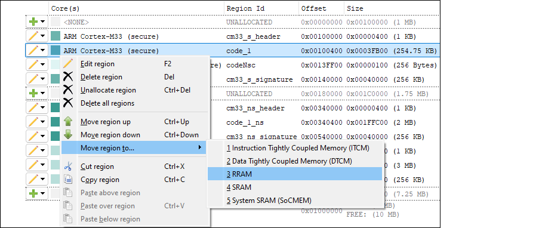
Address View subtab
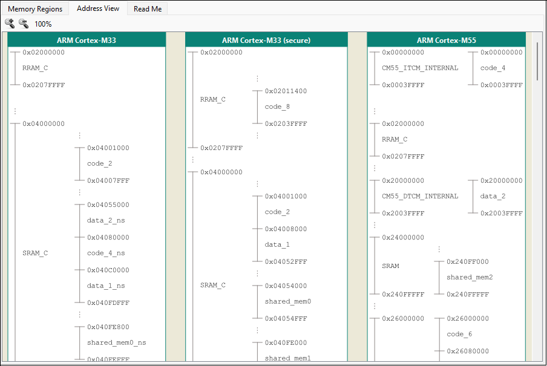
This subtab contains a toolbar with the standard zoom commands. Hovering the cursor over any of the regions displays a tooltip with a summary of the region’s info.
Read Me subtab
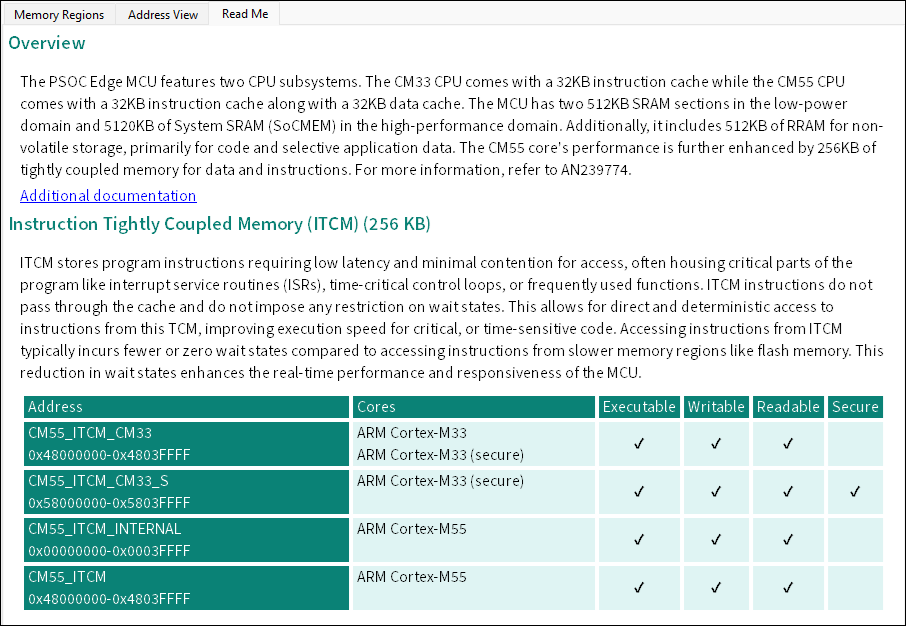
This file provides links to "how to" HTML topics to guide you how to configure memories.
MMIO-Clocks tab
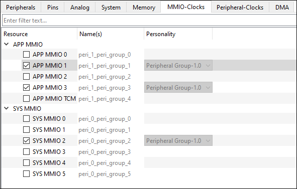
Peripheral-Clocks tab
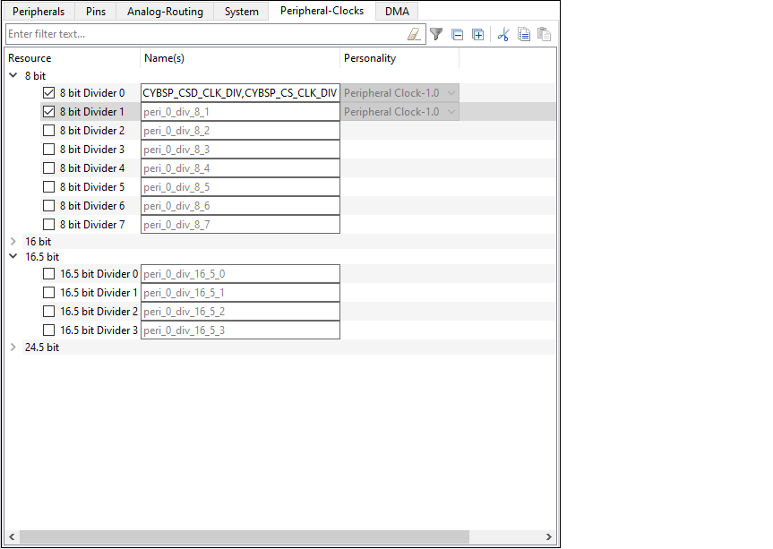
DMA tab